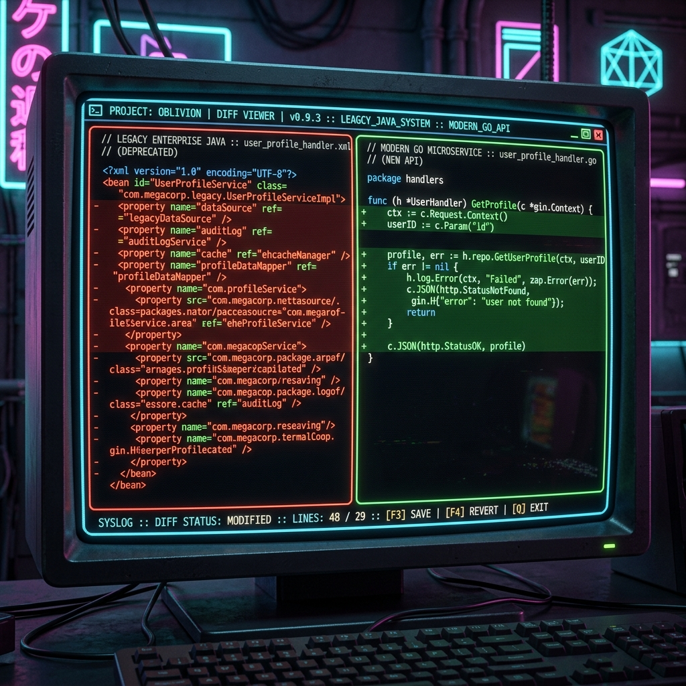

In October 2024, I was sitting on the bench at a TCS office in Pune. My days consisted of logging in at 9:00 AM, looking at Excel sheets containing legacy server status reports, and responding to system warnings by restarting services.
I was earning ₹3.6 Lakhs per annum (LPA). After rent, utilities, and sending money home, I had barely enough to buy dinner at the end of the month. Worst of all, my coding skills were decaying. I hadn't written a single line of Java or Python in two years. I was stuck in the Service Company Trap.
"The service trap isn't just about low salary. It's about skill decay. The longer you stay, the harder it is to leave, because your resume only lists support tools that product companies never use."
Nine months later, I cleared the backend interview at Swiggy with a ₹18 LPA CTC package.
I didn't pay ₹1,00,000 for a coding bootcamp, and I didn't solve 1,000 LeetCode problems. Here is the exact, step-by-step roadmap I used to break out of the system.
Phase 1: Overcoming the ATS Resume Filter
When you apply from a service giant like TCS, Infosys, or Cognizant, product-company recruitment systems (ATS) often filter you out immediately. If your resume contains words like "Supported client operations," "Maintained server uptime," or "Responded to tickets," you are flagged as a support engineer, not a developer.
I had to rewrite my resume completely. I replaced generic project summaries with impact-oriented bullet points:
Below is a visualization of how I re-modeled my legacy maintenance stack into a modern, product-ready microservices outline. Reframing support work as architecture impact is the single most important step to get your resume shortlisted.

Figure 1: Reframing legacy client databases into clean, modern API microservice designs.Phase 2: Escaping the 90-Day Notice Period Lock
Startups and product companies operate at high speeds. They want developers who can join immediately or within 30 days. When you tell a recruiter you have a 90-day notice period, the conversation usually ends.
Here are the three negotiation tactics I used to bypass the 90-day lockout:
- Get a Buyout Commitment: When interviewing, state clearly: "My notice period is officially 90 days, but I have accrued leaves and can negotiate an early release of 30 days if a buyout option is available." Most product companies are happy to pay 2 months of your salary to get you on board early.
- Trigger the Notice Period Early: If you have at least 80% confidence in your preparation, put in your resignation before securing a final offer. Once you are in your "last 30 days" of notice, your LinkedIn inbox will explode because you are suddenly an "immediate joiner."
- Negotiate Accrued Leave Encasement: Read your HR policy guide. Often, you can use accumulated leaves to offset the notice period. I used 18 days of privilege leaves to pull my exit date closer.
Phase 3: The 80/20 DSA Pattern Checklist
You do not need to solve 800 LeetCode problems to clear a product interview. In fact, doing so will lead to burnout. Most startup coding rounds check if you can recognize patterns, not if you have memorized academic solutions.
I focused exclusively on the 5 Core Patterns that cover 80% of all interview questions:
- Sliding Window: Used for arrays and strings where you need to track a contiguous subarray (e.g., maximum sum subarray of size K).
- Merge Intervals: Crucial for scheduling systems, calendars, and booking apps.
- BFS/DFS on Trees/Graphs: Navigating system nodes, directory structures, and social connections.
- Two Heaps: Used for keeping track of median or scheduling priority tasks (e.g., queue dispatchers).
- Topological Sort: Finding dependencies in build processes or job schedulers.
Phase 4: Talking System Design Without Scale Experience
This was my biggest fear. In my service company job, the maximum database load was 100 queries a day. How was I going to answer questions about designing system architectures that handle 100,000 requests per second?
The secret is that system design is about trade-offs, not actual scaling experience. You must understand where bottlenecks occur and how to resolve them using standard blocks:
Instead of saying, "I don't know, we didn't use databases," you must propose solutions using key architectural blocks:
- Introduce Caching (Redis/Memcached): Explain how caching static database results (like user profile info) prevents the main database from crashing during traffic spikes.
- Add Message Queues (Kafka/RabbitMQ): Show how moving slow tasks (like sending emails or processing payment receipts) to a background queue keeps the user interface responsive.
- Database Sharding & Replication: Discuss splitting a single database into read-replicas to handle concurrent query spikes.
📌 Summary of the Strategy
Stop spending hours on passive tutorials. Rewrite your support resume to focus on database and code improvements, line up multiple interviews to overlap notice buyout deadlines, and master the core DSA patterns. Escaping the service trap requires targeted preparation, not years of experience.